Quy trình nghiệp vụ
Ứng dụng Ký số cung cấp dịch vụ ký điện tử với công nghệ chữ ký số giúp việc ký kết văn bản giấy tờ nhanh chóng, kịp thời mà vẫn đảm bảo các yếu tố xác thực, bảo mật. Lưu trữ trực tuyến giúp cho quá trình tìm kiếm, truy xuất các văn bản ký kết một cách nhanh chóng, dễ dàng hơn.
Ứng dụng Ký số là công cụ hỗ trợ cho phép:
- Tạo và trình ký cùng lúc một hoặc nhiều văn bản trực tuyến nhanh chóng, dễ dàng. Hỗ trợ trình ký với các định dạng văn bản pdf, doc, excel, ppt.
- Cho phép ký điện tử. Ảnh chân ký tương ứng của người ký sẽ được thêm vào vị trí cần thiết
- Tích hợp với Ứng dụng Tài liệu sẽ hiệu quả trong lưu trữ quản lý văn bản sau ký và ban hành.
- Thông báo tới người liên quan khi có sự thay đổi trạng thái văn bản trình ký nhằm đảm bảo tiến độ công việc
- Ngoài ra, ứng dụng cung cấp nhiều tiện ích khác như: đọc văn bản trực tiếp trên ứng dụng, đổi lại người ký khi cần thiết, chuyển yêu cầu ký nháy cho văn bản ...
Quy trình
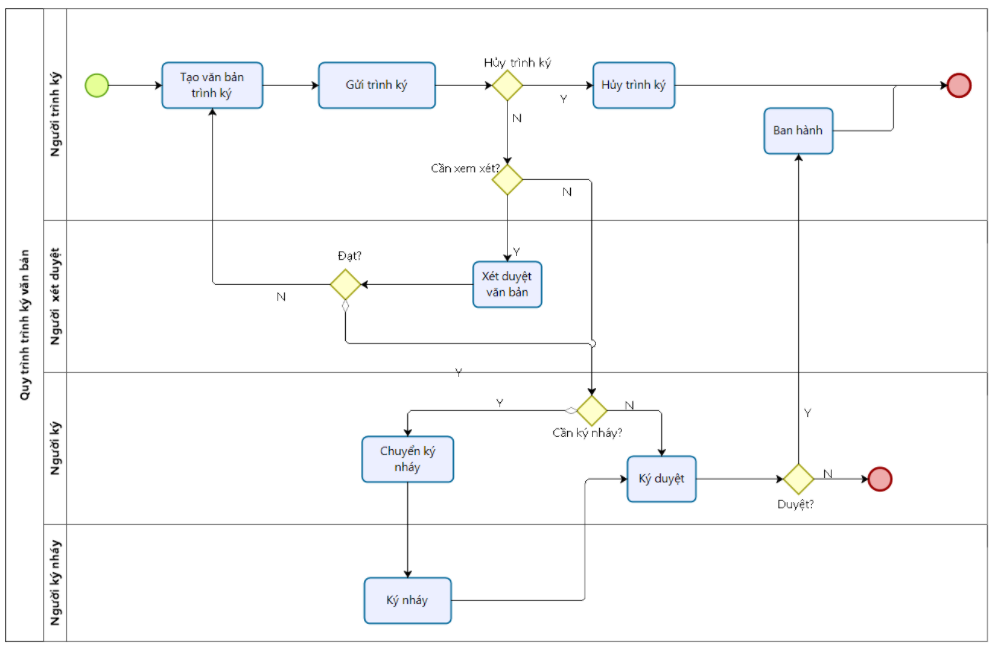
Các luồng quy trình
- Tìm kiếm và lọc văn bản trình ký. Chi tiết nghiệp vụ tại đây.
- Xử lý yêu cầu ký duyệt. Chi tiết nghiệp vụ tại đây.
- Ban hành văn bản. Chi tiết nghiệp vụ tại đây
Mô tả nghiệp vụ
Quá trình trình ký văn bản sẽ thực hiện theo quy trình sau:
- Người trình ký tạo văn bản trên ứng dụng ký số và trình ký tới danh sách người ký (thực hiện trên web).
- Người trình ký có thể đổi người ký khi người được trình ký chưa thực hiện ký duyệt văn bản.
- Trường hợp văn bản gửi tới cần phải xét duyệt trước ký, người xét duyệt cần xét duyệt văn bản trước (thực hiện trên web).
- Người ký có thể gửi yêu cầu ký nháy tới người khác trước khi ký duyệt
- Người được yêu cầu ký nháy thực hiện ký nháy hoặc từ chối ký nháy.
- Người ký thực hiện ký duyệt hoặc từ chối ký văn bản.
- Trường hợp văn bản được thiết lập tự động ban hành: sau khi người ký cuối ký duyệt văn bản sẽ thực hiện ban hành văn bản đó.
- Trường hợp văn bản không thiết lập tự động ban hành: Sau khi được ký duyệt xong, người dùng thực hiện ban hành văn bản.
Các chức năng chính
- Tìm kiếm và lọc văn bản trình ký. Chi tiết nghiệp vụ tại đây.
- Ký duyệt văn bản. Chi tiết nghiệp vụ tại đây.
- Từ chối ký duyệt. Chi tiết nghiệp vụ tại đây.
- Đổi người ký. Chi tiết nghiệp vụ tại đây.
- Chuyển ký nháy. Chi tiết nghiệp vụ tại đây.
- Ban hành văn bản. Chi tiết nghiệp vụ tại đây.
- Tải xuống. Chi tiết nghiệp vụ tại đây.
Video hướng dẫn
Tìm kiếm và lọc văn bản trình ký
Người dùng thực hiện tìm kiếm văn bản: văn bản mình tạo, văn bản chờ mình ký hoặc văn bản chờ xét duyệt, ký nháy. Đối tượng thực hiện: Người dùng có quyền truy cập phân hệ Ký số
Các bước thực hiện:
- Thực hiện truy cập vào app mobile, chọn phân hệ Ký số
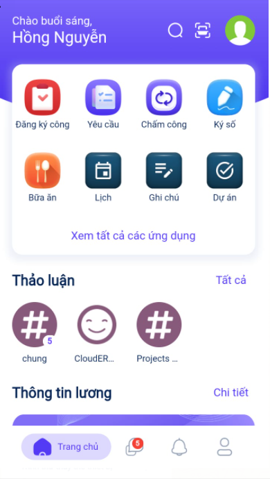
- Nhập tiêu chí tìm kiếm văn bản
Danh sách văn bản thỏa mãn điều kiện tìm kiếm hiển thị được sắp xếp theo thời gian giảm dần, nhóm lại theo khoảng ngày trong tháng.
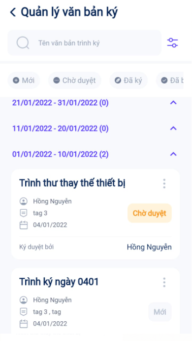
- Kích nút bộ lọc: Mở popup thực hiện tìm kiếm nâng cao theo các tiêu chí Người tạo, Người ký duyệt, Trạng thái, Loại văn bản, Nhãn, Từ ngày, Đến ngày.
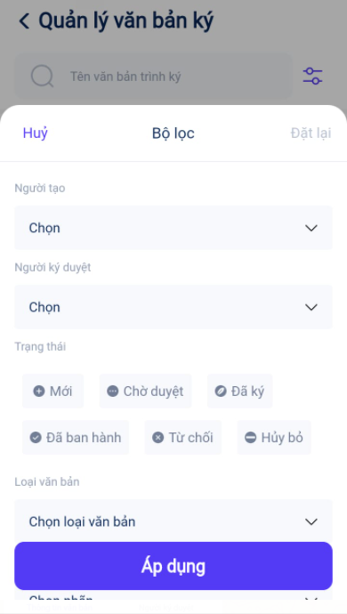
Xử lý yêu cầu ký duyệt
Ký duyệt
Khi nhận được thông báo yêu cầu ký duyệt văn bản, người dùng thực hiện xem xét và ký duyệt hoặc từ chối ký duyệt văn bản.
Đối tượng thực hiện : Người ký duyệt văn bản
Các bước thực hiện:
- Thực hiện truy cập vào app mobile, chọn phân hệ Ký số.
- Click vào xem văn bản ở trạng thái Chờ duyệt. Tab Người ký duyệt. Chọn Ký duyệt
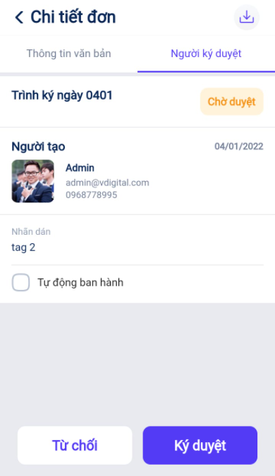
Hoặc tại màn hình danh sách tìm kiếm văn bản Chờ duyệt cần ký. Nhấn vào icon ... Chọn Ký duyệt
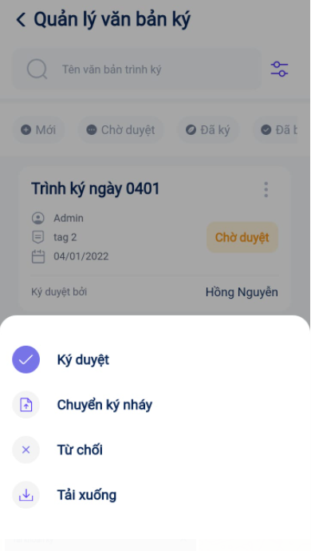
- Nhập Ghi chú, Thực hiện Ký duyệt hoặc Ký điện tử.
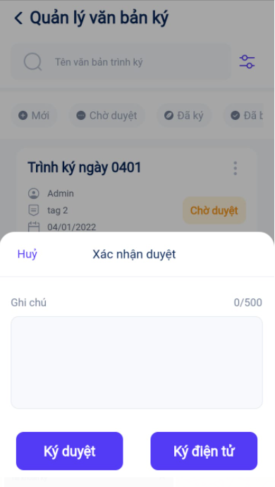
Nếu người trình ký văn bản không tích chọn ký số thì người ký có thể lựa chọn ký duyệt thông thường hoặc ký điện tử với sim CA.
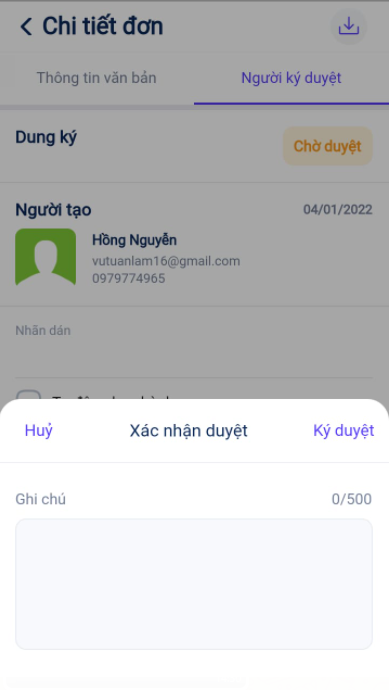
Nếu người trình văn bản có tích chọn ký số thì chỉ hiển thị lựa chọn Ký điện tử - người ký cần có sim CA để thực hiện ký duyệt văn bản.
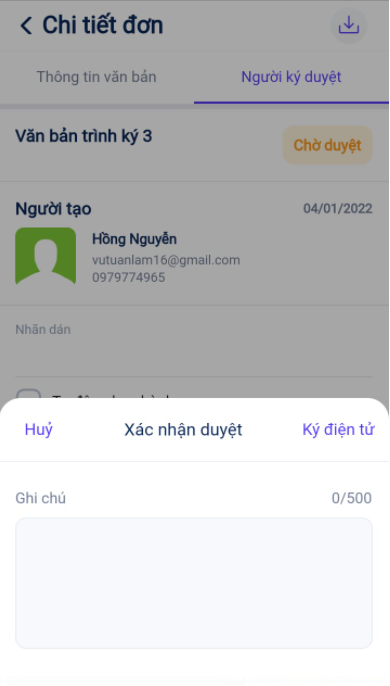
- Sau khi Ký thành công. Bản ghi đổi trạng thái thành Đã ký nếu người ký là người cuối cùng trong danh sách ký. Hoặc bản ghi ở trạng thái Chờ duyệt và gửi yêu cầu duyệt cho người tiếp theo nếu người ký chưa phải người cuối cùng trong danh sách ký.
Từ chối ký duyệt
Khi nhận được thông báo yêu cầu ký duyệt văn bản, người dùng thực hiện xem xét và ký duyệt hoặc từ chối ký duyệt văn bản.
Đối tượng thực hiện : Người ký duyệt văn bản
Các bước thực hiện:
- Thực hiện truy cập vào app mobile, chọn phân hệ Ký số.
- Click vào xem văn bản ở trạng thái Chờ duyệt. Tab Người ký duyệt. Chọn Từ chối
Hoặc tại màn hình danh sách tìm kiếm văn bản Chờ duyệt. Nhấn vào icon Menu, Chọn Từ chối
- Nhập Lý do từ chối, Chọn Từ chối.
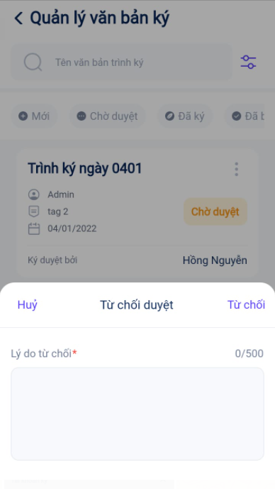
- Sau khi Từ chối thành công. Văn bản đổi trạng thái thành Bị từ chối.
Đổi người ký
Người trình ký thực hiện đổi người ký khi văn bản ở trạng thái Mới hoặc Chờ duyệt.
Đối tượng thực hiện: Người dùng đã tạo văn bản.
Các bước thực hiện:
- Thực hiện truy cập vào app mobile, chọn phân hệ Ký số.
- Click vào xem văn bản. Phần tài khoản ký, chọn Đổi người ký.
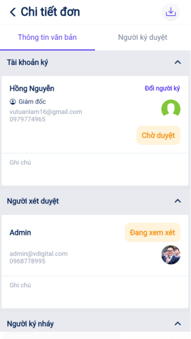
- Nhập thông tin người ký mới. Có thể chọn một người trong danh sách tài khoản ký mà chưa thuộc luồng ký hiện tại.
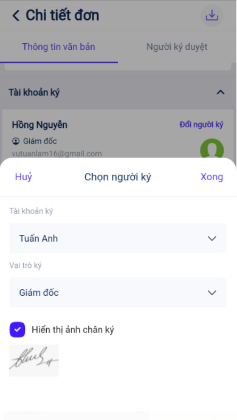
- Click Xong. Đổi người ký thành công. Nếu đến lượt người đó ký sẽ chuyển trình ký tới người vừa được đổi.
Chuyển ký nháy
Người ký duyệt văn bản có thể chuyển ký nháy tới một hoặc nhiều người khác khi có nhu cầu cần ký nháy trước khi ký duyệt.
Đối tượng thực hiện : Người ký duyệt văn bản
Các bước thực hiện:
- Thực hiện truy cập vào app mobile, chọn phân hệ Ký số.
- Tại màn hình danh sách tìm kiếm văn bản Chờ duyệt. Nhấn vào icon Menu, Chọn Chuyển ký nháy
- Nhập Ghi chú, Chọn người ký nháy, vai trò ký. Có thể chọn một hoặc nhiều tài khoản ký nháy mà không nằm trong danh sách ký chính, ký nháy hoặc xét duyệt văn bản.
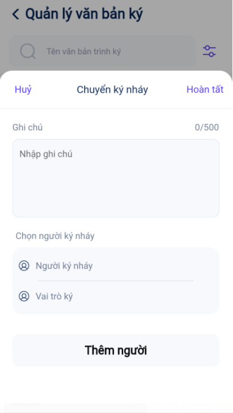
- Click Hoàn tất. Chuyển ký nháy thành công. Người được chuyển ký nháy sẽ nhận được thông báo yêu cầu ký nháy cho văn bản.
Ban hành văn bản
Cho phép người dùng ban hành thủ công văn bản đã ký duyệt: cấp số văn bản và lưu trữ văn bản tại đúng thư mục bên ứng dụng Tài liệu (nếu có cài đặt).
Đối tượng thực hiện : Người ký ban hành, người trình ký, người xét duyệt
Các bước thực hiện:
- Thực hiện truy cập vào app mobile, chọn phân hệ Ký số.
- Tại màn hình danh sách tìm kiếm văn bản Đã ký. Nhấn vào icon Menu, Chọn Ban hành
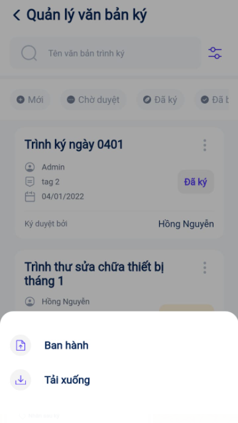
- Click Sửa để mở màn hình Thông tin ban hành.
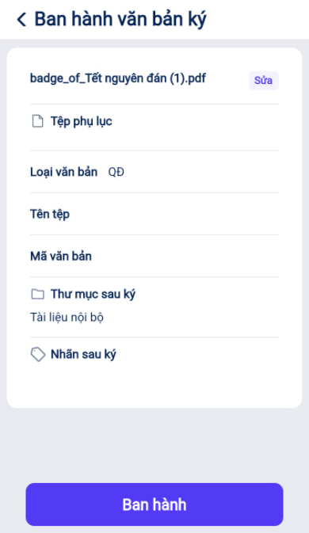
- Nhập thông tin ban hành văn bản gồm: tên văn bản, thư mục lưu trữ sau ký, gán nhãn , mã văn bản được cấp. Click Lưu.
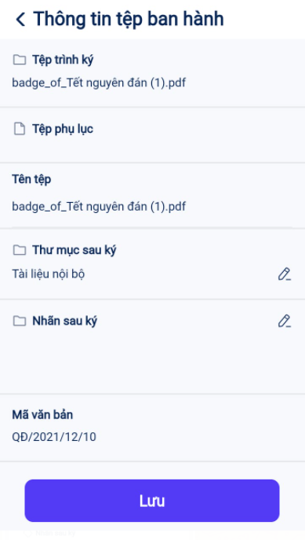
- Sau khi nhập thông tin ban hành cho tất cả văn bản xong, chọn Ban hành. Trạng thái văn bản chuyển thành Đã ban hành.
Tải xuống
Cho phép người dùng tải xuống file zip về máy (Chỉ hiển thị trên android)
Đối tượng thực hiện : Người sử dụng hệ thống
Các bước thực hiện:
- Thực hiện truy cập vào app mobile, chọn phân hệ Ký số.
- Click vào xem văn bản. Chọn Tải xuống
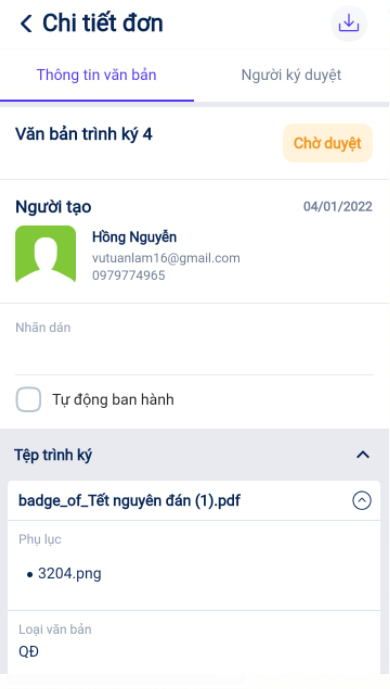
Hoặc tại màn hình danh sách tìm kiếm văn bản. Nhấn vào icon Menu, Chọn Tải xuống.